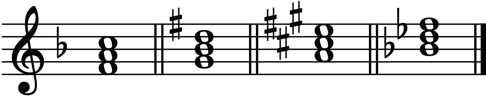
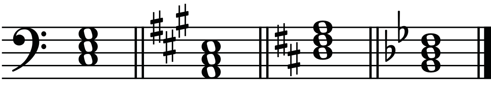
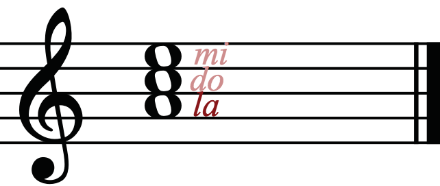
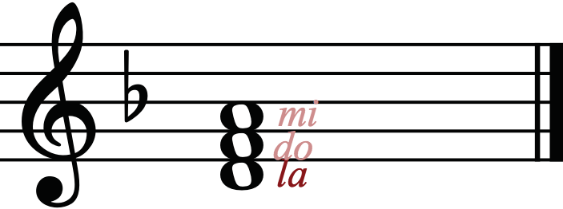

Activity 3.5
(a) Construct the E♭ major tonic triad with and without key signature.
(b) In groups, sing the following tonic triads using solfa syllables.
Use any melodic instrument to identify the starting pitch.
(i)

(ii)

Tonic triads in minor keys
Tonic triads in minor keys are also constructed from the first degree (^1) of the scale, that is ‘la’.
For instance, in ‘A’ minor, the tonic triad will include ‘A’ as la (the first note), C as do (the third note) and E as mi (the fifth note).
Figure 3.16 shows the ‘A’ minor tonic triad.

Figure 3.16: The ‘A’ minor tonic triadFigure 3.17 shows the D minor tonic triad.

Figure 3.17: The D minor tonic triadActivity 3.6
Construct the E minor tonic triad on a bass staff with a key signature.